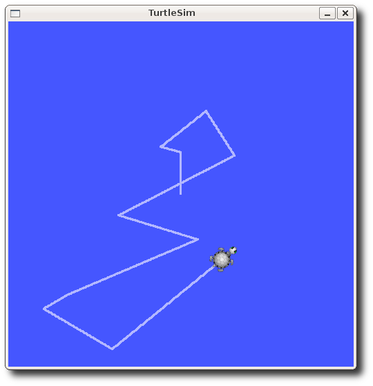

1 Linux操作系统基础
1.1 简介
Linux，全称GNU/Linux，是一套免费使用和自由传播的类Unix操作系统，是一个多用户、多任务、支持多线程和多CPU的操作系统。 伴随着互联网的发展，Linux得到了来自全世界软件爱好者、组织、公司的支持。它除了在服务器方面保持着强劲的发展势头以外，在个人电脑、嵌入式系统上都有着长足的进步。使用者不仅可以直观地获取该操作系统的实现机制，而且可以根据自身的需要来修改完善Linux，使其最大化地适应用户的需要。 Linux不仅系统性能稳定，而且是开源软件。其核心防火墙组件性能高效、配置简单，保证了系统的安全。在很多企业网络中，为了追求速度和安全，Linux不仅仅是被网络运维人员当作服务器使用，甚至当作网络防火墙，这是Linux的一大亮点。 Linux具有开放源码、没有版权、技术社区用户多等特点，开放源码使得用户可以自由裁剪，灵活性高，功能强大，成本低。尤其系统中内嵌网络协议栈，经过适当的配置就可实现路由器的功能。这些特点使得Linux成为开发路由交换设备的理想开发平台。

1.2 主要的发行版本
| Method | Description |
|---|---|
debian |
|
redhat |
|
gentoo |
 |
fedora |
|
ubuntu |
1.3 安装Ubuntu
1.3.1 安装虚拟机
1.下载 virtualbox
访问官网，下载安装包，官网下载地址：VirtualBox
2.安装 virtualbox
virtualbox 安装比较简单，双击下载好的安装文件，一直 "下一步" 即可。（可自行修改安装路径）
3.添加虚拟机

1.3.2 添加Ubuntu镜像
镜像下载地址：ubuntu-releases-18.04.6安装包下载_开源镜像站-阿里云 (aliyun.com) —— ubuntu-18.04.6-desktop-amd64.iso
1.3.3 安装Ubuntu
等待安装完成，重启电脑，进行账号登录即可进入Ubuntu系统桌面
1.4 目录结构
Linux的操作大部分都是直接执行命令，没有便利的可视化操作界面，所以我们对Linux的操作大多数时候都是通过终端的方式与系统进行交互。
终端是用户与系统交互使用的命令行界面，可使用快捷键 Ctrl+Alt+T 打开
Linux的文件系统是采用级层式的树状目录结构，在此结构中的最上层是根目录“/”，然后在此目录下再创建其他的目录。在Linux世界里，一切皆文件。

- root：该目录为系统管理员目录，root是具有超级权限的用户
- bin ：存放系统预装的二进制（binary）可执行程序，这里存放的可执行文件可以在系统的任何目录下执行
- boot：启动（boot）时用到的核心配置文件
- dev：设备（device）文件
- etc：存放系统管理所需的配置文件、启动脚本等（etc）
- home：本地用户主（home）目录
- var：经常变化的（variable）文件，例如日志或数据库等
- lib：系统库（libraries）文件，存放最基本的动态链接共享库，几乎所有的应用程序都要用到该目录下的文件
- usr：包含绝大部分所有用户（users）都能访问的应用程序和文件
1.5 常用命令
常用的终端工具terminator，可使用以下命令进行安装
sudo apt install terminator终端启动快捷键：Ctrl+Alt+T
- pwd： pwd（Print Working Directory）命令用于显示当前的工作目录
- ls： ls（List）命令用于显示指定工作目录之下的内容
vkrobot@vkrobot：~$ ls --help
用法：ls[选项]...[文件]...
List information about the FILES (the current directory by default).
-a, -all 不隐藏任何以. 开始的项目
-l 使用较长格式列出信息
...
vkrobot@vkrobot：~$ ls -al
- cd： cd（Change Directory）命令用于切换目录，变换工作目录至 dirName，其中 dirName 为绝对路径或相对路径
vkrobot@vkrobot：~$ pwd
/home/vkrobot
vkrobot@vkrobot：~$ cd ..
vkrobot@vkrobot：~$ pwd
/home
vkrobot@vkrobot：~$ cd /
vkrobot@vkrobot：~$ pwd
/
- clear： clear命令用于清屏
- mkdir： mkdir（Make Directory）命令用于创建目录（文件夹）
vkrobot@vkrobot：~$ mkdir --help
用法：mkdir [选项]... 目录...
Create the DIRECTORT(ies), if they do not exist.
- touch： touch命令用于创建文件
vkrobot@vkrobot：~$ touch --help
用法：touch [选项]... 文件...
A FILE argument that dose not exist is creared empty
- rm： rm（Remove）命令用于删除目录（文件夹）或文件
vkrobot@vkrobot：~$ rm --help
用法：rm [选项]... [文件]...
Remove (unlink) the FILE(s).
-r, -R, --recursive remove directories and their contents recusively
-d, --dir remove empty directories
- chmod： chmod命令用于变更文件或目录的权限。在Linux中，文件或目录权限的控制分别以读取(r/4)、写入(w/2)、执行(x/1)三种权限来区分
vkrobot@vkrobot：~$ chmod --help
用法：chmod [选项]... 模式[,模式]... 文件...
Change the mode of each FILE to MODE.
- sudo： sudo是允许系统管理员让普通用户执行一些或全部的root命令的一个工具，也就是暂时提升普通用户的权限
2 ROS编程基础
2.1 ROS是什么
ROS (Robot Operating System, 机器人操作系统) 提供一系列程序库和工具以帮助软件开发者创建机器人应用软件。它提供了硬件抽象、设备驱动、函数库、可视化工具、消息传递和软件包管理等诸多功能。ROS遵循BSD开源许可协议。

ROS设计者将ROS表述为“ROS = Plumbing + Tools + Capabilities + Ecosystem”，即ROS是通讯机制、工具软件包、机器人高层技能以及机器人生态系统的集合体

2.2 ROS安装
ROS与Ubuntu版本对应关系
| ROS版本名称 | LOGO | 发布时间 | 支持的操作系统 |
|---|---|---|---|
| ROS Noetic Ninjemys |  |
2020/05/23 | Ubuntu 20.04 |
| ROS Melodic Morenia | 2018/05/23 | Ubuntu 18.04 | |
| ROS Lunar Loggerhead | 2017/05/23 | Ubuntu 16.04 | |
| ROS Kinetic Kame |  |
2016/05/23 | Ubuntu 15.10 |
| ROS Jade Turtle | 2015/05/23 | Ubuntu 14.04 | |
| ...... | ...... | ...... | ...... |
- 配置Ubuntu软件仓库
打开“软件和更新”配置你的Ubuntu软件仓库（repositories）以允许使用 “restricted”、“universe” 和 “multiverse” 存储库。
- 设置sources.list
vkrobot@vkrobot：~$ sudo sh -c '. /etc/lsb-release && echo "deb http://mirrors.tuna.tsinghua.edu.cn/ros/ubuntu/ `lsb_release -cs` main" > /etc/apt/sources.list.d/ros-latest.list'
- 设置密钥
vkrobot@vkrobot：~$ sudo apt-key adv --keyserver 'hkp：//keyserver.ubuntu.com：80' --recv-key C1CF6E31E6BADE8868B172B4F42ED6FBAB17C654
- 安装
- 初始化rosdep
vkrobot@vkrobot：~$ sudo apt-get install python3-pip
vkrobot@vkrobot：~$ sudo pip3 install rosdepc
vkrobot@vkrobot：~$ sudo rosdepc init
vkrobot@vkrobot：~$ rosdepc update
vkrobot@vkrobot：~$ sudo chmod -R 777 ~/.ros/
- 设置环境
vkrobot@vkrobot：~$ echo "source /opt/ros/melodic/setup.bash" >> ~/.bashrc
vkrobot@vkrobot：~$ source ~/.bashrc
- 构建依赖
vkrobot@vkrobot：~$ sudo apt-get install python-rosinstall python-rosinstall-generator python-wstool build-essential
使用以下命令检查ROS是否安装成功：
roscore
2.3 ROS的核心概念
计算图（Computation Graph）是一个由ROS进程组成的点对点网络，它们能够共同处理数据。ROS的基本计算图概念有节点（Nodes）、主节点（Master）、参数服务器（Parameter Server）、消息（Messages）、服务（Services）、话题（Topics）和袋（Bags），它们都以不同的方式向图（Graph）提供数据。
- 节点（Nodes）：节点是一个可执行文件，它通过ROS来与其他节点进行通信。
- 主节点（Master）：ROS的命名服务，例如帮助节点发现彼此。
- 消息（Messages）：订阅或发布话题时所使用的ROS数据类型。
- 话题（Topics）：节点可以将消息发布到话题，或通过订阅话题来接收消息。
使用
rqt_graph命令能够创建一个显示当前系统ROS程序运行情况的动态图形，显示不同节点之间的关系

2.3.1 节点与主节点
节点（Nodes）
节点实际上只不过是ROS软件包中的一个可执行文件。ROS节点使用ROS客户端库与其他节点通信。节点可以发布或订阅话题，也可以提供或使用服务。
特点：
- 不同节点可使用不同语言编写，分布式部署在不同的主机上
- 节点在系统中的名称必须是唯一的
例如，咱们有一个机器人，和一个遥控器，那么这个机器人和遥控器开始工作后，就是两个节点。遥控器起到了下达指令的作用；机器人负责监听遥控器下达的指令，完成相应动作。从这里我们可以看出，节点是一个能执行特定工作任 务的工作单元，并且能够相互通信，从而实现一个机器人系统整体的功能。在这里我们把遥控器和机器人简单定义为两个节点，实际上在机器人中根据控制器、传感器、执行机构等不同组成模块，还可以将其进一步细分为更多的节点，这个是根据用户编写的程序来定义的。）
客户端库：ROS客户端库可以让用不同编程语言编写的节点进行相互通信
- rospy： Python客户端库
- roscpp： C++客户端库
主节点（Master）
roscore是你在运行所有ROS程序前首先要运行的命令
然后你会看到类似下面的输出信息：
... logging to ~/.ros/log/9cf88ce4-b14d-11df-8a75-00251148e8cf/roslaunch-machine_name-13039.log
Checking log directory for disk usage. This may take awhile.
Press Ctrl-C to interrupt
Done checking log file disk usage. Usage is <1GB.
started roslaunch server http://machine_name：33919/
ros_comm version 1.4.7
SUMMARY
PARAMETERS
* /rosdistro： melodic
* /rosversion： 1.14.13
NODES
auto-starting new master
process[master]： started with pid [13054]
ROS_MASTER_URI=http://machine_name：11311/
setting /run_id to 9cf88ce4-b14d-11df-8a75-00251148e8cf
process[rosout-1]： started with pid [13067]
started core service [/rosout]
使用 rosnode
rosnode显示当前正在运行的ROS节点信息。rosnode list命令会列出这些活动的节点：
这表示当前只有一个节点在运行： rosout。因为这个节点用于收集和记录节点的调试输出，所以它总是在运行的。
rosnode info命令可以返回某个指定节点的信息
vkrobot@vkrobot：~$ rosnode info /rosout
--------------------------------------------------------------------
Node [/rosout]
Publications：
* /rosout_agg [rosgraph_msgs/Log]
Subscriptions：
* /rosout [unknown type]
Services：
* /rosout/get_loggers
* /rosout/set_logger_level
contacting node http://machine_name：54614/ ...
Pid： 5092
使用 rosrun
rosrun可以让你用包名直接运行软件包内的节点（而不需要知道包的路径）
用法：
rosrun [package_name] [node_name]
在一个新终端中：

注意：此处的乌龟可能和你turtlesim窗口上的不同。
复习
本节所涉及的内容：
- roscore = ros + core：主节点（为ROS提供命名服务）
- rosnode = ros + node：获取节点信息的ROS工具
- rosrun = ros + run：运行给定的软件包中的节点
2.3.2 话题通信

首先确保roscore与turtlesim正在运行
打开一个新终端：
vkrobot@vkrobot：~$ rosrun turtlesim turtle_teleop_key
Reading from keyboard
---------------------------
Use arrow keys to move the turtle.
现在你可以使用键盘上的方向键来控制turtle运动了。如果不能控制，请选中turtle_teleop_key的终端窗口以确保按键输入能够被捕获。

打开一个新终端：
你会看到一个窗口：

使用 rostopic
rostopic命令工具能让你获取ROS话题的信息。
你可以使用帮助选项查看可用的rostopic的子命令
vkrobot@vkrobot：~$ rostopic --help
rostopic is a command-line tool for printing information about ROS Topics.
Commands：
rostopic bw display bandwidth used by topic
rostopic delay display delay of topic from timestamp in header
rostopic echo print messages to screen
rostopic find find topics by type
rostopic hz display publishing rate of topic
rostopic info print information about active topic
rostopic list list active topics
rostopic pub publish data to topic
rostopic type print topic or field type
Type rostopic <command> -h for more detailed usage, e.g. 'rostopic echo -h'
rostopic echo
rostopic echo可以显示在某个话题上发布的数据。
用法：rostopic echo [topic]
你可能会看到什么都没发生，因为现在还没有数据被发布到该话题上。可以通过按下键盘方向键让
turtle_teleop_key节点发布数据。记得如果不能控制乌龟，请选中turtle_teleop_key的终端窗口以确保按键输入能够被捕获。
rostopic list
rostopic list能够列出当前已被订阅和发布的所有话题。
vkrobot@vkrobot：~$ rostopic list -v
Published topics：
* /turtle1/color_sensor [turtlesim/Color] 1 publisher
* /turtle1/cmd_vel [geometry_msgs/Twist] 1 publisher
* /rosout [rosgraph_msgs/Log] 2 publishers
* /rosout_agg [rosgraph_msgs/Log] 1 publisher
* /turtle1/pose [turtlesim/Pose] 1 publisher
Subscribed topics：
* /turtle1/cmd_vel [geometry_msgs/Twist] 1 subscriber
* /rosout [rosgraph_msgs/Log] 1 subscriber
-v 参数可以列出所有发布和订阅的话题及其类型的详细信息
消息（Messages）
话题的通信是通过节点间发送ROS消息实现的。为了使发布者（turtle_teleop_key）和订阅者（turtulesim_node）进行通信，发布者和订阅者必须发送和接收相同类型的消息。这意味着话题的类型是由发布在它上面消息的类型决定的。使用rostopic type命令可以查看发布在话题上的消息的类型。
使用 rosmsg
rosmsg可以显示消息类型的具体信息
用法：rosmsg <command> <msg_type>
vkrobot@vkrobot：~$ rosmsg show geometry_msgs/Twist
geometry_msgs/Vector3 linear
float64 x
float64 y
float64 z
geometry_msgs/Vector3 angular
float64 x
float64 y
float64 z
可以使用
rostopic type [topic]命令查看指定话题的消息类型，现在我们已经知道了turtlesim节点想要的消息类型，然后就可以发布命令给turtle了
使用 rostopic 工具发布消息
rostopic pub可以把数据发布到当前某个正在广播的话题上。
用法：rostopic pub [topic] [msg_type] [args]
vkrobot@vkrobot：~$ rostopic pub -r 10 /turtle1/cmd_vel geometry_msgs/Twist "liner：
x： 2.0
y： 0.0
z： 0.0
angular：
x： 0.0
y： 0.0
z： 1.8"
可以再次使用
rqt_graph命令查看当前的计算图
复习
本节所涉及的内容：
- rqt_graph：计算图可视化工具
- rostopic = ros + topic：话题管理工具
- rosmsg = ros + msg：消息管理工具
2.3.3 服务通信
服务（Services）是节点之间通讯的另一种方式。服务允许节点发送一个请求（request）并获得一个响应（response）。

使用 rosservice
rosservice可以很容易地通过服务附加到ROS客户端/服务器框架上。rosservice有许多可用于服务的命令
用法：
rosservice list：输出活跃服务的信息rosservice type：输出服务的类型-
rosservice call：用给定的参数调用服务 -
...
-
rosservice list
使用list命令显示turtlesim节点提供的服务
vkrobot@vkrobot：~$ rosservice list
/clear
/kill
/reset
/rosout/get_loggers
/rosout/set_logger_level
/spawn
/teleop_turtle/get_loggers
/teleop_turtle/set_logger_level
/turtle1/set_pen
/turtle1/teleport_absolute
/turtle1/teleport_relative
/turtlesim/get_loggers
/turtlesim/set_logger_level
rosservice type
用法：rosservice type [service]
来看看clear服务的类型：
服务的类型为Empty（空），这表明调用这个服务时不需要参数
rosservice call
用法：rosservice call [service] [args]

再让我们看看服务具有参数的情况。查看spawn（产卵）服务的信息：
vkrobot@vkrobot：~$ rosservice type /spawn | rossrv show
float32 x
float32 y
float32 theta
string name
---
string name
这个服务能让我们可以在给定的位置和角度生成一只新的乌龟。

复习
本节所涉及的内容：
- rosservice = ros + service：服务管理工具
- rossrv = ros + srv：服务数据管理工具
2.3.4 参数服务器

使用 rosparam
rosparam能让我们在ROS参数服务器（Parameter Server）上存储和操作数据。参数服务器能够存储整型（integer）、浮点（float）、布尔（boolean）、字典（dictionaries）和列表（list）等数据类型。
用法：
rosparam set：设置参数rosparam get：获取参数rosparam load：从文件中加载参数rosparam dump：向文件中转储参数rosparam delete：删除参数-
rosparam list：列出参数名 -
rosparam list
vkrobot@vkrobot：~$ rosparam list
/rosdistro
/roslaunch/uris/host_nxt__43407
/rosversion
/run_id
/turtlesim/background_b
/turtlesim/background_g
/turtlesim/background_r
rosparam set&rosparam get
用法：rosparam set [param_name]
`rosparam get [param_name]`
vkrobot@vkrobot：~$ rosparam get /turtlesim/background_r
69
vkrobot@vkrobot：~$ rosparam set /turtlesim/background_r 150
这里虽然修改了参数的值，但是海龟窗口的背景颜色并没有变化，我们还需要调用clear服务使参数修改能生效

也可以用rosparam get /来获取参数服务器中所有的参数内容：
vkrobot@vkrobot：~$ rosparam get /
rosdistro： 'melodic
'
roslaunch：
uris：(host_localhost__46785： 'http://localhost：46785/')
rosversion： '1.14.3
'
run_id： 7ef687d8-9ab7-11ea-b692-fcaa1494dbf9
turtlesim：(background_b： 255，background_g： 86，background_r： 69)
rosparam dump&rosparam load
用法：rosparam dump [file_name] [namespace]
rosparam load [file_name] [namespace]
重启
roscore与turtlesim后，可以重新加载背景颜色参数
vkrobot@vkrobot：~$ roscore
vkrobot@vkrobot：~$ rosrun turtlesim turtlesim_node
vkrobot@vkrobot：~$ rosparam load param.yaml
vkrobot@vkrobot：~$ rosservice call /clear
复习
本节所涉及的内容：
- rosparam = ros + param：参数管理工具
2.3.5 文件系统

程序代码散落在许多ROS包中。使用Linux内置命令行工具（如ls和cd）来进行查找和导航可能非常繁琐，因此ROS提供了专门的命令工具来简化这些操作
使用 rospack
rospack允许用户获取功能包的有关信息
用法：rospack <command> [option] [package_name]
使用 roscd
roscd允许用户直接切换目录到某个功能包或元功能包中
用法：roscd [locationname[/subdir]]
vkrobot@vkrobot：~$ roscd rospy
vkrobot@vkrobot：/opt/ros/melodic/share/rospy$ pwd
/opt/ros/melodic/share/rospy
使用 rosls
rosls允许用户直接按功能包的名称执行ls命令（而不必输入绝对路径）
用法：rosls [locationname[/subdir]]
Tab补全
总是输入完整的软件包名称感觉比较繁琐。在之前的例子中，turtlesim turtlesim_node是个相当长的名称。幸运的是，一些ROS工具支持TAB补全的功能。
当按TAB键后，命令行应该会自动补充剩余部分：
复习
本节所涉及的内容：
- rospack = ros + pack(age)：提供与ROS包相关的信息
- roscd = ros + cd：将目录更改为ROS包或堆栈
- rosls = ros + ls：列出ROS包中的文件
2.4 工作空间与功能包
catkin是ROS官方指定的编译系统，一个包要想称为catkin功能包，必须符合以下要求：
- 这个包必须有一个符合catkin规范的package.xml文件
- 这个
package.xml文件提供有关该功能包的元信息 - 这个包必须有一个catkin版本的CMakeLists.txt文件
- 如果它是个Catkin元包的话，则需要有一个
CMakeList.txt文件的相关样板 - 每个包必须有自己的目录
- 这意味着在同一个目录下不能有嵌套的或者多个功能包存在
最简单的功能包看起来就像这样：
开发catkin功能包的推荐方法是使用catkin工作空间，一个简单的工作空间如下所示：
workspace_folder/ -- WORKSPACE
build/ -- BUILD SPACE
devel/ -- DEVELOPMENT SPACE
setup.bash
...
src/ -- SOURCE SPACE
CMakeLists.txt -- 'Toplevel' CMake file
package_1/
CMakeLists.txt -- CMakeLists.txt file for package_1
package.xml -- Package manifest for package_1
...
package_n/
CMakeLists.txt -- CMakeLists.txt file for package_n
package.xml -- Package manifest for package_n
2.4.1 创建工作空间
下面我们开始创建和构建一个catkin工作空间
vkrobot@vkrobot：~$ mkdir -p ~/catkin_ws/src
vkrobot@vkrobot：~$ cd ~/catkin_ws
vkrobot@vkrobot：~/catkin_ws$ catkin_make #编译
vkrobot@vkrobot：~/catkin_ws$ source devel/setup.bash #设置环境变量
vkrobot@vkrobot：~/catkin_ws$ echo $ROS_PACKAGE_PATH #检查环境变量
/home/vkrobot/catkin_ws/src：/opt/ros/melodic/share
2.4.2 创建功能包
catkin_create_pkg是ROS提供的功能包创建工具
用法：catkin_create_pkg <package_name> [depend1] [depend2]
下面我们开始创建一个功能包：
vkrobot@vkrobot：~$ cd ~/catkin_ws/src
vkrobot@vkrobot：~/catkin_ws/src$ catkin_create_pkg vkrobot_tutorials std_msgs rospy roscpp
vkrobot@vkrobot：~/catkin_ws/src$ cd ..
vkrobot@vkrobot：~/catkin_ws$ catkin_make #重新编译
vkrobot@vkrobot：~/catkin_ws$ source devel/setup.bash #设置环境变量
vkrobot@vkrobot：~/catkin_ws$ echo $ROS_PACKAGE_PATH #检查环境变量
/home/vkrobot/catkin_ws/src：/opt/ros/melodic/share
使用以下命令添加工作空间的环境变量以保正每次打开新终端都能自动设置环境变量
echo "source /home/<用户名>/<工作空间名称>/devel/setup.bash" >> ~/.bashrc
2.4.3 VScode集成开发环境搭建
1.下载
vscode 下载：Visual Studio Code Download
2.安装
sudo dpkg -i xxx.deb
3.安装插件
2.5 话题通信
2.5.1 发布者节点编程实现
vkrobot@vkrobot：~$ roscd vkrobot_tutorials
vkrobot@vkrobot：~/catkin_ws/src/vkrobot_tutorials$ mkdir scripts
vkrobot@vkrobot：~/catkin_ws/src/vkrobot_tutorials$ cd scripts
vkrobot@vkrobot：~/catkin_ws/src/vkrobot_tutorials/scripts$ touch talker.py
vkrobot@vkrobot：~/catkin_ws/src/vkrobot_tutorials/scripts$ chmod +x talker.py #添加可执行权限
编辑talker.py文件，添加以下内容：
#!/usr/bin/env python3
#每个Python ROS节点的最开头都有这个声明
import rospy #如果要使用python编写ROS节点，都需要导入rospy
from std_msgs.msg import String #导入std_msgs/String消息类型来发布字符串消息
def talker()：
#向ROS Master注册节点信息，参数包括（话题名称，消息类型，队列长度）
pub = rospy.Publisher('chatter', String, queue_size=10)
#初始化ROS节点，第一个参数为节点名称，第二个参数会在名称末尾添加随机数，以确保节点具有唯一的名称
rospy.init_node('talker', anonymous=True)
#创建一个Rate对象，传入参数10表示希望的循环速率为10Hz
rate = rospy.Rate(10)
while not rospy.is_shutdown()：
#封装需要发布的消息数据
hello_str = String()
hello_str.data = "hello world %s" % rospy.get_time()
#发布封装好的消息数据
pub.publish(hello_str)
#在循环中使用rate.sleep()，它可以用刚刚好的睡眠时间来维持期望的循环速率
rate.sleep()
if __name__ '__main__'：
try：
talker()
except rospy.ROSInterruptException： #捕获程序异常
pass
运行talker节点：
运行成功后，打开一个新终端订阅chatter话题接收消息：
vkrobot@vkrobot：~$ rostopic echo /chatter
data： "hello world 1682410011.24"
---
data： "hello world 1682410011.34"
......
2.5.2 订阅者节点编程实现
vkrobot@vkrobot：~$ roscd vkrobot_tutorials/scripts
vkrobot@vkrobot：~/catkin_ws/src/vkrobot_tutorials/scripts$ touch listener.py
vkrobot@vkrobot：~/catkin_ws/src/vkrobot_tutorials/scripts$ chmod +x listener.py #添加可执行权限
编辑listener.py文件，添加以下内容：
#!/usr/bin/env python3
#每个Python ROS节点的最开头都有这个声明
import rospy #如果要使用python编写ROS节点，都需要导入rospy
from std_msgs.msg import String #导入std_msgs/String消息类型定义需要接收的消息类型
#回调函数
def callback(data)：
#向终端输出日志信息
rospy.loginfo(rospy.get_caller_id() + " I heard %s", data.data)
def listener()：
#初始化ROS节点，第一个参数为节点名称，第二个参数会在名称末尾添加随机数，以确保节点具有唯一的名称
rospy.init_node('listener', anonymous=True)
#向ROS Master注册节点信息，参数包括（话题名称，消息类型，回调函数）
rospy.Subscriber("chatter", String, callback)
#阻塞循环，等待消息传递，一旦接收到消息则进入回调函数进行处理
rospy.spin()
if __name__ '__main__'：
listener()
运行listener节点：
vkrobot@vkrobot：~$ rosrun vkrobot_tutorials listener.py
[INFO] [1314931969.258941] /listener_17657_1314931968795 I heard hello world 1314931969.26
[INFO] [1314931970.262246] /listener_17657_1314931968795 I heard hello world 1314931970.26
......
⚠⚠⚠确保ROS Master与talker节点已启动
2.5.3 自定义消息类型
ROS本身提供了许多不同消息类型的功能包，如：std_msgs、geometry_msgs、sensor_msgs等，可以满足一般场景的使用，但是在很多情况下用户依然需要针对具体的需求定义特定的消息类型
- msg（消息）：msg文件就是文本文件，用于描述ROS消息的字段。它们用于为不同编程语言编写的消息生成源代码
msg文件存放在软件包的msg目录下
msg文件就是简单的文本文件，每行都有一个字段类型和字段名称。可以使用的类型为：
- int8, int16, int32, int64 (以及 uint*)
- float32, float64
- string
- time, duration
- 其他msg文件
下面，我们将在之前创建好的功能包中定义一个新的消息类型：
vkrobot@vkrobot：~$ roscd vkrobot_tutorials
vkrobot@vkrobot：~/catkin_ws/src/vkrobot_tutorials$ mkdir msg
vkrobot@vkrobot：~/catkin_ws/src/vkrobot_tutorials$ cd msg
vkrobot@vkrobot：~/catkin_ws/src/vkrobot_tutorials/msg$ touch my_msgs.msg
编辑my_msgs.msg文件，添加以下内容：
编辑完成后，保存并退出，接下来我们还需要修改package.xml和CMakeLists.txt两个文件，确保msg文件能被转换为C++、Python或其他语言的源代码
- 修改
package.xml
添加以下依赖项：
- 修改
CMakeLists.txt
# 在find_package中添加message_generation的依赖
find_package(catkin REQUIRED COMPONENTS
roscpp
rospy
std_msgs
message_generation
)
# 释放add_message_files块，并添加自定义的msg文件
add_message_files(
FILES
my_msgs.msg
)
# 释放generate_messages块，添加自定义消息依赖的所有功能包
generate_messages(
DEPENDENCIES
std_msgs
)
# 在catkin_package中添加message_runtime的依赖
catkin_package(
...
CATKIN_DEPENDS message_runtime ...
...)
两个文件都修改完成后，回到工作空间的根目录再次编译
以上就是创建消息的所有步骤。让我们通过rosmsg show命令看看ROS能否识别它
用法：rosmsg show [message_type]
vkrobot@vkrobot：~$ rosmsg show vkrobot_tutorials/my_msgs
uint8 female = 0
uint8 male = 1
string name
uint8 age
uint8 sex
或
vkrobot@vkrobot：~$ rosmsg show my_msgs
[vkrobot_tutorials/my_msgs]：
uint8 female = 0
uint8 male = 1
string name
uint8 age
uint8 sex
练习
试着创建一个发布者节点和一个订阅者节点，传递自定义的消息吧😀
my_talker.py
#! /usr/bin/env python3
import rospy
from vkrobot_tutorials.msg import my_msgs
def talker()：
pub = rospy.Publisher('chatter', my_msgs, queue_size=10)
rospy.init_node('talker', anonymous=True)
rate = rospy.Rate(10)
while not rospy.is_shutdown()：
msg = my_msgs()
msg.name = "xiaowei"
msg.age = 7
msg.sex = msg.male # or msg.sex = msg.female
pub.publish(msg)
rate.sleep()
if __name__ '__main__'：
try：
talker()
except rospy.ROSInterruptException：
pass
my_listener.py
#! /usr/bin/env python3
import rospy
from vkrobot_tutorials.msg import my_msgs
def listener()：
rospy.init_node('listener', anonymous=True)
rospy.Subscriber('chatter', my_msgs, callback)
rospy.spin()
def callback(data)：
rospy.loginfo(rospy.get_caller_id() + " I heard %s", data)
if __name__ '__main__'：
listener()
复习
总结一下本小节中我们接触过的命令：
- rosmsg = ros + msg：提供与ROS消息定义相关的信息
2.6 服务通信
2.6.1 自定义服务类型
- srv（服务）：一个srv文件描述一个服务。它由两部分组成：请求（request）和响应（response）。
srv文件和msg文件一样，只是它们包含两个部分：请求和响应。这两部分用一条---线隔开。下面是一个srv文件的示例：
让我们使用之前创建的包再来创建服务：
vkrobot@vkrobot：~$ roscd vkrobot_tutorials
vkrobot@vkrobot：~/catkin_ws/src/vkrobot_tutorials$ mkdir srv
我们将从另一个包复制现有的srv定义，而不是手动创建新的srv。roscp是一个实用的命令行工具，用于将文件从一个包复制到另一个包。
用法：roscp [package_name] [file_to_copy_path] [copy_path]
现在我们可以从rospy_tutorials包中复制一个服务：
vkrobot@vkrobot：~/catkin_ws/src/vkrobot_tutorials$ roscp rospy_tutorials AddTwoInts.srv srv/AddTwoInts.srv
⚠⚠⚠注意此时的终端路径！！！
接下来我们还需要修改package.xml和CMakeLists.txt两个文件，确保srv文件能被转换为C++、Python或其他语言的源代码
- 修改
package.xml
添加以下依赖项：
在自定义msg时，如果已经做过相同的操作，可以跳过此步
- 修改
CMakeLists.txt
# 在find_package中添加message_generation的依赖
find_package(catkin REQUIRED COMPONENTS
roscpp
rospy
std_msgs
message_generation
)
# 释放generate_messages块，添加自定义消息依赖的所有功能包
generate_messages(
DEPENDENCIES
std_msgs
)
# 在catkin_package中添加message_runtime的依赖
catkin_package(
...
CATKIN_DEPENDS message_runtime ...
...)
# 👆👆👆上面的内容如果在自定义msg时已做过相同操作可跳过👆👆👆
# 释放add_service_files块，并添加自定义的msg文件
add_service_files(
FILES
AddTwoInts.srv
)
两个文件都修改完成后，回到工作空间的根目录再次编译
以上就是创建消息的所有步骤。让我们通过rossrv show命令看看ROS能否识别它
用法：rossrv show <message_type>
vkrobot@vkrobot：~$ rossrv show vkrobot_tutorials/AddTwoInts
int64 a
int64 b
---
int64 sum
或
vkrobot@vkrobot：~$ rosmsg show AddTwoInts
[vkrobot_tutorials/AddTwoInts]：
int64 a
int64 b
---
int64 sum
[rospy_tutorials/AddTwoInts]：
int64 a
int64 b
---
int64 sum
这里显示了两个服务。第一个是刚刚在vkrobot_tutorials包中创建的，第二个是之前rospy_tutorials包中已经存在的。
复习
总结一下本小节中我们接触过的命令：
- roscp = ros + cp：将文件从ROS包复制到ROS包
- rossrv = ros + srv：提供与ROS服务定义相关的信息
2.6.2 服务器节点编程实现
vkrobot@vkrobot：~$ roscd vkrobot_tutorials/scripts
vkrobot@vkrobot：~/catkin_ws/src/vkrobot_tutorials/scripts$ touch add_two_ints_server.py
vkrobot@vkrobot：~/catkin_ws/src/vkrobot_tutorials/scripts$ chmod +x add_two_ints_server.py #添加可执行权限
编辑add_two_ints_server.py文件，添加以下内容：
#!/usr/bin/env python3
#每个Python ROS节点的最开头都有这个声明
import rospy #如果要使用python编写ROS节点，都需要导入rospy
#导入自定义的服务数据类型与响应
from vkrobot_tutorials.srv import AddTwoInts,AddTwoIntsResponse
def callback(req)：
#终端打印信息
print("Returning [%s + %s = %s]"%(req.a, req.b, (req.a + req.b)))
#发送响应信息
return AddTwoIntsResponse(req.a + req.b)
def add_two_ints_server()：
#初始化ROS节点，参数为节点名称
rospy.init_node('add_two_ints_server')
#向ROS Master注册节点信息，参数包括（服务名称，服务类型，回调函数）
s = rospy.Service('add_two_ints', AddTwoInts, callback)
#终端打印信息
print("Ready to add two ints.")
#阻塞循环，等待客户端请求，一旦接收到请求则进入回调函数进行处理
rospy.spin()
if __name__ '__main__'：
add_two_ints_server()
运行add_two_ints_server节点：
vkrobot@vkrobot：~$ roscore #先启动ROS Master
vkrobot@vkrobot：~$ rosrun vkrobot_tutorials add_two_ints_server.py
运行成功后，打开一个新终端调用服务：
2.6.3 客户端节点编程实现
vkrobot@vkrobot：~$ roscd vkrobot_tutorials/scripts
vkrobot@vkrobot：~/catkin_ws/src/vkrobot_tutorials/scripts$ touch add_two_ints_client.py
vkrobot@vkrobot：~/catkin_ws/src/vkrobot_tutorials/scripts$ chmod +x add_two_ints_client.py #添加可执行权限
编辑add_two_ints_client.py文件，添加以下内容：
#!/usr/bin/env python3
#每个Python ROS节点的最开头都有这个声明
import rospy #如果要使用python编写ROS节点，都需要导入rospy
from vkrobot_tutorials.srv import * #导入自定义的服务数据类型
import sys #用于获取命令行参数
def add_two_ints_client(x, y)：
#调用此方法可以让程序在服务可用之前一直阻塞
rospy.wait_for_service('add_two_ints')
try：
#为服务的调用创建了一个句柄（handle），然后我们就可以使用这个句柄，像普通函数一样调用它，参数（服务名称，服务数据类型）
add_two_ints = rospy.ServiceProxy('add_two_ints', AddTwoInts)
#获取服务器响应
response = add_two_ints(x, y)
return response.sum
#如果服务调用失败，rospy.ServiceException会抛出异常
except rospy.ServiceException as e：
print("Service call failed： %s"%e)
if __name__ '__main__'：
#判断命令行参数长度是否为3，（程序名，整数1，整数2）
if len(sys.argv) 3：
x = int(sys.argv[1])
y = int(sys.argv[2])
else：
print("Only accepted two parameters")
sys.exit(1)
print("Requesting %s + %s"%(x, y))
print("%s + %s = %s"%(x, y, add_two_ints_client(x, y)))
运行add_two_ints_client节点：
⚠⚠⚠确保ROS Master与server节点已启动
练习
已知小海龟节点提供了/spawn服务，请编写代码调用此服务：smiley：
turtle_spawn.py
#! /usr/bin/env python3
import rospy
from turtlesim.srv import Spawn, SpawnRequest
import sys
def turtle_spawn_client(x, y, theta, name)：
rospy.wait_for_service('spawn')
try：
turtle_spawn = rospy.ServiceProxy('spawn', Spawn)
response = turtle_spawn(x, y, theta, name)
return response.name
except rospy.ServiceException as e：
rospy.loginfo("Service call failed： %s" % e)
if __name__ '__main__'：
if len(sys.argv) 5：
x = float(sys.argv[1])
y = float(sys.argv[2])
theta = float(sys.argv[3])
name = str(sys.argv[4])
else：
rospy.loginfo("Only accepted four parameters.")
sys.exit(1)
print("Spawning %s" % turtle_spawn_client(x, y, theta, name))